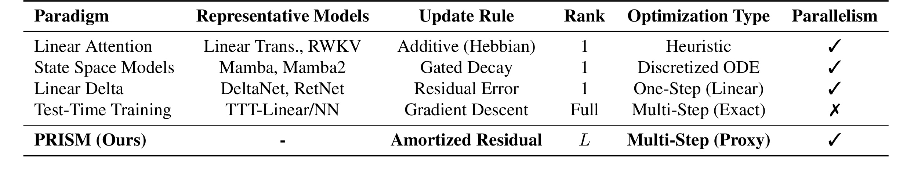
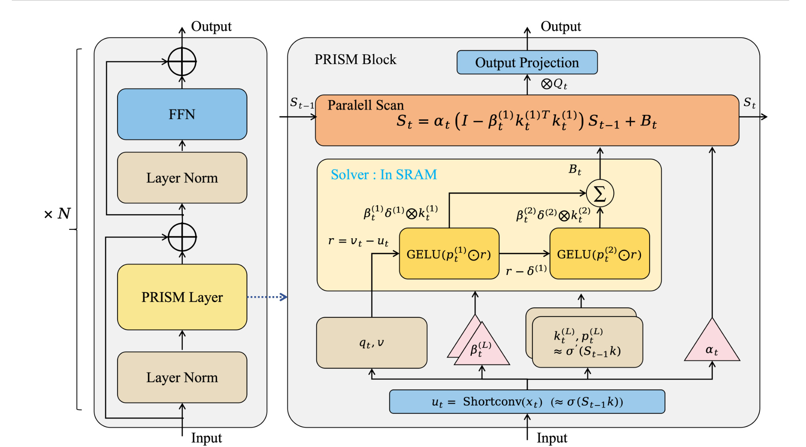
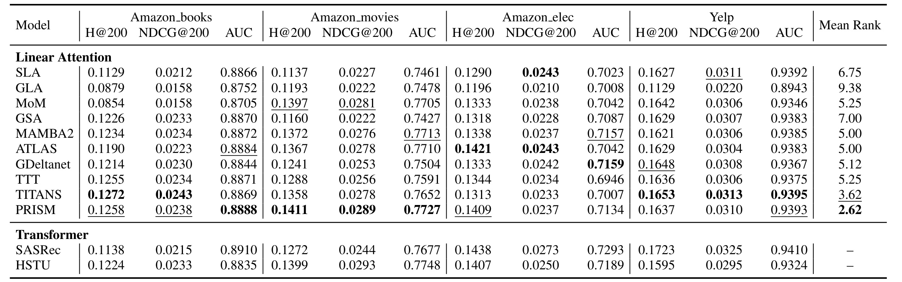
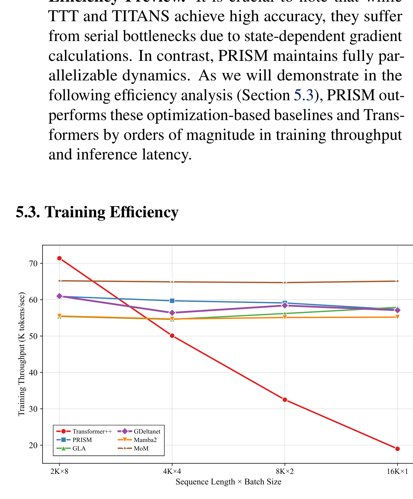
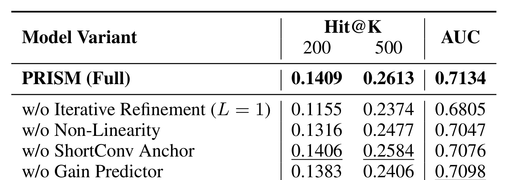
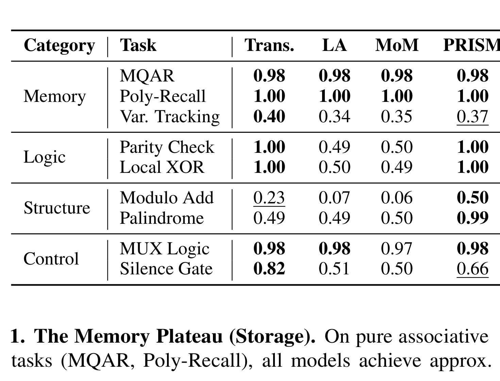

这篇 arXiv 论文《PRISM: Parallel Residual Iterative Sequence Model》来自 Tencent AMS，一作及多位共同一作为 Jie Jiang、Ke Cheng、Xin Xu、Mengyang Pang 和 Tianhao Lu，合作机构包括北京大学通用人工智能全国重点实验室、北京大学智能学院和北京大学人工智能研究院；论文入口是 arXiv:2602.10796。它关心的是高效序列模型里的一个核心矛盾：Transformer 有很强的非线性表达力和全局交互能力，但长序列开销高；线性注意力、SSM、DeltaNet 一类模型训练和推理更高效，却常被 Rank-1、单步更新和线性递推限制。PRISM 的阅读重点是看作者如何把“多步残差迭代优化”的结构性好处摊平成一个可并行的输入锚定 feed-forward 写入算子，并在推荐序列建模、吞吐效率、组件消融和机制探针中证明它不是简单多加几层 MLP。
1. 背景和问题
长序列生成式建模现在面临的矛盾并不是“模型能不能看得更长”这么简单，而是“看得长、写得准、算得快”三件事很难同时满足。Transformer 的 self-attention 可以让每个位置直接读取历史 token，表达力强，适合建模复杂依赖；但当序列长度 $N$ 增大时，标准注意力的 $O(N^2)$ 复杂度会迅速成为瓶颈。推荐系统里的长期用户行为、超长上下文语言建模、在线交互历史和持续记忆场景，都不希望只靠滑窗截断或者静态压缩，因为这些技巧会把远期兴趣、跨会话偏好或稀疏但关键的历史信号切掉。
线性注意力和状态空间模型的主张是把历史压进一个递推状态。典型形式可以写成状态矩阵 $S_t$ 的在线更新：
其中 $k_t$ 和 $v_t$ 分别是当前 token 的 key/value 表示，$S_t$ 是把历史 key-value 关联累积起来的 memory。这个形式的好处是明显的：如果递推能写成可结合的线性算子，就可以用 parallel prefix scan 或硬件友好的 recurrent kernel，在训练时沿序列并行化，避免 Transformer 的二次复杂度。问题也同样明显：每一步写入本质上是一个外积 $v_t k_t^\top$，也就是 Rank-1 更新。它能把当前 token 的一条关联写入 memory，却很难表达“根据当前 memory 状态判断应该如何修正”“对多个互补方向逐步消除残差”“在饱和区域自动降低写入强度”这类更像优化器的行为。
DeltaNet、RetNet 和 Gated DeltaNet 等工作已经把线性注意力从纯 Hebbian accumulation 推向 residual error correction。例如 Delta rule 会写成：
这个公式比纯加法更合理，因为它不是盲目写入 $v_t$，而是先看当前 memory 对 $k_t$ 的预测 $S_{t-1}k_t$，再写入预测残差 $v_t-S_{t-1}k_t$。但为了保留并行 scan，这类方法通常必须把更新限制成状态无关或近似状态无关的线性形式，最终仍然容易落回 one-step、Rank-1、浅层修正。换句话说，它开始像优化，但还只是一步线性优化。
另一条路线是 Test-Time Training 或 test-time memorization：模型在推理或训练过程中显式对 hidden state 做多步梯度下降，让 memory 写入可以根据当前状态、损失和非线性网络自适应改变。这类方法的表达力更接近“真的在优化一个局部目标”，可以做多步 refinement，也可以让写入方向依赖当前 memory landscape。代价是梯度项依赖 $S_{t-1}$，每个时间步都必须等前一个状态算完，硬件并行性被破坏。论文把这个问题称为 Serial Dependency Bottleneck：显式优化方法虽然强，但把长序列训练重新拖回串行链路，吞吐会被打穿。

Table 1 把这些路线放在同一张谱系里。Linear Attention 和 RWKV 类方法是 additive/Hebbian，更新 rank 通常是 1，优化性质更像 heuristic；Mamba/Mamba2 用 gated decay 或离散 ODE 解释状态转移，但写入仍受低秩结构约束；DeltaNet/RetNet 引入 residual error，却仍是 one-step linear；TTT-Linear/NN 可以做 full-rank、多步 exact gradient descent，但不能并行；PRISM 的定位是 Multi-Step Proxy：它不在运行时真的执行串行优化，而是学习一个输入锚定的代理，把多步迭代修正的结构压缩成可并行计算的 Rank-$L$ 写入。
这张表也是理解 PRISM 的入口。作者不是单纯提出一个新 block，也不是只追求更快 kernel，而是在问：如果理想的序列记忆写入应该像一个非线性迭代 solver，但显式 solver 会破坏并行，那么能不能只保留 solver 的结构性归纳偏置，例如残差递减、上下文增益、高秩累积和非线性 shaping，同时把所有需要状态依赖的部分替换成只依赖输入局部上下文的可并行代理？PRISM 的答案是可以，而且这件事特别适合推荐序列，因为用户兴趣往往多模态、长尾且局部行为能提供强烈的近期能量锚点。
从推荐系统角度看，这个问题也很现实。一个用户的长期行为不是单一兴趣向量，而可能同时包含品类偏好、价格敏感度、品牌偏好、季节性需求、短期任务和平台活动影响。Rank-1 写入像是在每次交互后只沿一个方向微调 memory，面对多兴趣并存时容易互相覆盖；显式多步优化可以逐步校正不同残差方向，但在线训练成本太高。PRISM 试图提供一种折中：遗忘路径保持线性和稳定，写入路径用输入锚定的多层残差循环构造更高秩的 injection matrix。这样它既保留线性模型的 $O(N)$ 训练吞吐，又给 memory 写入更深的“优化味道”。
因此，这篇论文要解决的核心问题可以总结为三层。第一，理论层面，线性注意力为什么会受到 one-shot/Ring-1 bottleneck 限制，理想非线性 solver 又为什么和并行 scan 冲突。第二，结构层面，如何把状态依赖的 residual、gain 和 basis 用输入局部代理改写成可并行的 $A_t,B_t$。第三，实验层面，这种代理是否真的比普通线性模型强、是否接近 TTT/TITANS 等显式优化模型、是否还能保持足够高的吞吐。后文方法部分会按照这三层展开。
2. 方法
2.1 从在线优化重新理解线性注意力
PRISM 的方法从一个重要重写开始：把线性注意力看成在线学习，而不是只看成 attention 的低复杂度近似。令 $k_t\in\mathbb{R}^d$、$v_t\in\mathbb{R}^d$ 表示第 $t$ 个位置的 key 和 value，状态矩阵 $S_t\in\mathbb{R}^{d\times d}$ 存储历史 key-value 关联。标准线性注意力写作：
作者把它解释为对线性目标的一步梯度下降。定义局部目标：
如果用固定学习率 $\beta$ 做 online gradient descent，就有：
符号解释：$S_t$ 是第 $t$ 步后的记忆矩阵，$k_t$ 和 $v_t$ 是当前 token 的 key/value，$\beta$ 是学习率；$\nabla_S L_t$ 表示对记忆矩阵求梯度。当 $\beta=1$ 时，它就回到常见线性注意力写法。这个视角的好处是把“写入 memory”变成了“对当前 token 的局部目标做优化”。但也暴露了限制：这个优化目标太浅，只追求 $S k_t$ 和 $v_t$ 的线性对齐；更新方向不看当前状态是否已经过度写入，也不看输出空间是否处在非线性饱和区域。每一步都是同一种外积形状，最多做 Rank-1 修正。
为了说明为什么需要非线性，论文构造了一个更理想的局部重构目标。让 memory 对当前 key 的预测先经过非线性函数 $\sigma$：
这个目标更接近“让当前 memory 通过一个非线性读出重构 value”。对 $S$ 做一阶梯度下降，可以得到理想非线性 delta rule：
符号解释：$\Delta S_t$ 是本步写入增量，$\sigma$ 是非线性读出函数，$\sigma^{\prime}$ 是对应导数，$\odot$ 是逐元素乘法，$\beta$ 是 step size。这个公式包含三个关键组件。第一，$v_t-\sigma(S_{t-1}k_t)$ 是 residual，表示当前 memory 在非线性读出后还差多少。第二，$\sigma'(S_{t-1}k_t)$ 是 contextual gain，它让更新强度依赖当前 memory 的激活区域：如果已经饱和，导数小，写入应被抑制；如果处在敏感线性区，导数大，模型可以快速适应。第三，$k_t^\top$ 是 basis，决定写入投影方向。相比简单 $v_t k_t^\top$，这个更新更像一个会看误差、看局部曲率、看上下文状态的优化器。
问题在于，这个理想更新的 residual 和 gain 都依赖 $S_{t-1}k_t$。只要 $B_t$ 或 $A_t$ 依赖前一状态，递推就不能写成纯输入决定的可结合算子。并行 prefix scan 需要状态更新满足：
符号解释：$A_t$ 是 forgetting/transition operator，$B_t$ 是 injection operator，$f_A$ 与 $f_B$ 是仅依赖输入前缀的函数。且 $A_t=f_A(x_{\le t})$、$B_t=f_B(x_{\le t})$ 不依赖中间状态 $S_{t-1}$。否则两个相邻 step 的组合算子不能提前独立计算，只能从左到右串行推进。PRISM 的核心挑战就在这里：理想 solver 需要状态依赖，硬件并行需要状态无关。作者没有直接近似整个 solver，而是进一步区分 forget path 和 write path。
2.2 Write-Forget Decoupling：把稳定性留给遗忘，把表达力留给写入
PRISM 提出 Write-Forget Decoupling 的假设：在递推 $S_t=S_{t-1}A_t+B_t$ 中，遗忘算子 $A_t$ 和写入算子 $B_t$ 对误差的敏感性不同。遗忘路径主要控制历史状态如何衰减、保留和稳定传递；写入路径负责把新语义注入 memory。论文在附录中用谱扰动和离散 ODE 视角分析，认为稳定系统里 multiplicative forgetting operator 的近似误差会以较慢方式累积，最坏情况近似 $O(\ln T)$，平均意义上更接近常数级；而 additive injection 的误差会在持久 memory channel 中线性累积，可能造成不可逆的信息缺失。
这带来一个设计取舍：$A_t$ 可以保持简单、低秩、线性和硬件友好，因为它更需要稳定；$B_t$ 则必须保留高秩和非线性表达，因为写入质量直接决定语义是否丢失。PRISM 因此让 forgetting dynamics 采用类似 Gated DeltaNet 的 Rank-1 衰减形式：
符号解释：$I$ 是单位阵，$k_t^{(1)}$ 是第一层投影 basis，$\beta_t^{(1)}$ 是标量 gate，$\otimes$ 表示外积。这个结构的优势是谱性质可控，在 $\beta_t\in[0,1]$ 且 $\|k_t\|\le 1$ 时，算子不会指数发散，也容易被 recurrent kernel 或 scan 机制处理。它不是 PRISM 最主要的表达力来源，而是系统的稳定骨架。
写入路径 $B_t$ 则承担主要创新。它不再是一个 Rank-1 外积，而是多个互补 rank component 的累加：
符号解释：$L$ 是 refinement layers 数量，$l$ 表示第几层残差细化；$k_t^{(l)}$ 是第 $l$ 层的几何投影 basis；$\delta_t^{(l)}$ 是第 $l$ 层的写入方向；$\beta_t^{(l)}$ 是该层 step size 或 confidence gate。这个公式是 Rank Accumulation 的核心：每一层都提供一个 rank-1 更新，但多层累加后形成 Rank-$L$ 的 injection matrix。它模仿了多步 solver 逐步修正不同残差方向的行为，又不需要在时间维度上串行访问 $S_{t-1}$。
2.3 Input-Anchored Simulation：用局部输入代理状态依赖项
为了让 $B_t$ 不依赖 $S_{t-1}$，PRISM 引入 Input-Anchored Simulation。作者的假设是：在许多序列任务中，控制 contextual gain 和 residual 的交互 $S_{t-1}k_t$ 很大程度上被近期局部上下文主导，尤其推荐序列里近期行为的 energy 对当前兴趣变化有强提示。因此可以用短卷积从输入历史中构造一个代理：
符号解释：$X_{\le t}$ 是到当前为止的输入序列，$u_t$ 是 local pre-activation proxy，$\mathrm{ShortConv}$ 是短卷积局部历史编码器。注意它不是完整恢复 memory state，也不是声称等价于 $S_{t-1}k_t$；它只是一个输入锚点，用于产生后续 residual、gain、basis 和 gate。这样做的本质是把状态依赖优化转成 amortized prediction：模型学习从当前输入地形中预测“如果真的做多步 solver，大概应该沿哪些方向修正”。

Figure 1 展示了 PRISM 的完整结构。左侧 Phase 1 是 Input-Anchored Simulation：ShortConv 先生成 $u_t$，然后多个并行 predictor 从 $u_t$ 产生 contextual gain 向量 $p_t^{(l)}$、basis projection $k_t^{(l)}$ 和 gate $\beta_t^{(l)}$。右侧 Phase 2 是 Iterative Rank Accumulation：模型维护一个残差 $r_t^{(l)}$，每一层生成一个修正方向 $\delta_t^{(l)}$，再把该修正从残差里扣掉，让下一层去捕捉补充误差信号。最后所有 rank component 累加成高秩 $B_t$，再和线性遗忘算子一起进入 decoupled recurrence。这个架构把“时间上多步迭代”改造成“层内多步残差细化”，从而避免沿序列串行。
具体地，PRISM 对每层先从 anchor 生成 basis 和 gain：
符号解释：$W_k^{(l)}$、$W_p^{(l)}$、$W_{\beta}^{(l)}$ 都是第 $l$ 层可学习投影，分别生成 basis、gain 和 gate。$p_t^{(l)}$ 被解释成 simulated contextual gain，不再真实计算 $\sigma'(S_{t-1}k_t)$，而是从局部输入代理估计。初始 residual 则写成：
符号解释：$r_t^{(1)}$ 是第一层残差代理，$v_t$ 是目标 value，$u_t$ 是输入锚定代理。这个近似很关键。理想 solver 的 residual 是 $v_t-\sigma(S_{t-1}k_t)$，但真实项依赖 $S_{t-1}$；PRISM 用 $u_t$ 作为读出代理，得到一个可并行的初始误差信号。随后每一层执行：
符号解释：$\delta_t^{(l)}$ 是第 $l$ 层修正量，$r_t^{(l+1)}$ 是扣除该修正后的下一层残差，$\mathrm{GELU}$ 提供非线性 shaping。这两个公式是 PRISM 的“残差迭代”所在。$p_t^{(l)}\odot r_t^{(l)}$ 对应理想 solver 中 contextual gain 与 residual 的调制；GELU 引入非线性 shaping；$r_t^{(l+1)}=r_t^{(l)}-\delta_t^{(l)}$ 则让下一层看到被当前层修正后剩余的误差。作者把它称为 Greedy Residual Subtraction，直觉类似 gradient boosting 或迭代残差拟合：第一层处理最大、最直接的误差，后续层捕捉补充方向，最终形成多个相对互补的 rank component。
最终状态更新写成：
符号解释：$\alpha_t$ 是整体 decay gate，第一项 $S_{t-1}(I-\beta_t^{(1)}k_t^{(1)}\otimes k_t^{(1)})$ 负责遗忘和稳定传递，第二项的求和负责高秩写入。这个公式把 PRISM 的设计目标完整表达出来：遗忘路径保持 state-independent、低秩、可 scan；写入路径通过 $L$ 层输入锚定残差细化模拟多步优化；整个 $A_t,B_t$ 都由输入代理生成，因此可以在序列维度并行预计算，再交给线性 recurrent kernel。
2.4 PRISM 与 TTT、DeltaNet、Mamba 的差异
PRISM 和 TTT 的相似之处在于二者都承认“单步线性写入不够深”，都希望 memory update 有优化过程的味道。差异在于 TTT 是 exact optimization：每一步真的根据状态和损失算梯度；PRISM 是 amortized optimization：它只学习多步 solver 的结构模式，不声称恢复真实梯度轨迹。这个差异非常重要，因为真实梯度轨迹依赖 $S_{t-1}$，无法并行；结构模式只要能从输入局部上下文预测，就可以在硬件上并行执行。PRISM 牺牲了 exactness，换取吞吐和可扩展性。
PRISM 和 DeltaNet/Gated DeltaNet 的关系更近。DeltaNet 已经把更新写成 residual correction，但通常仍是单步 Rank-1 correction。PRISM 保留了 delta rule 的 error-correction 思想，又把写入从 single rank component 扩展到 Rank-$L$，并在每个 component 中加入 gain predictor 和非线性 residual loop。可以说，PRISM 不是否定 DeltaNet，而是把 DeltaNet 的一阶优化视角向“多步残差拟合”推进。
PRISM 和 Mamba/SSM 的差异则在于解释重点不同。Mamba 通过输入相关的选择机制和状态空间离散化提升上下文过滤能力，强项是动态选择和长程状态传递；PRISM 强调的是写入算子的优化 fidelity，也就是新信息以什么 rank、什么 residual、什么非线性方式进入 memory。论文中的 Write-Forget Decoupling 也暗含这个判断：forgetting path 可以借鉴稳定的 gated decay，而更应该投入表达力的是 injection path。
从工程实现看，PRISM 的核心成本来自每个 token 内部 $L$ 层 rank accumulation。它不是在序列长度维度展开多步 solver，而是在 feature/channel 计算里做小循环。只要这个循环能融合进 recurrent kernel 或 SRAM-resident block，就不会像 TTT 那样产生时间维串行瓶颈。论文的 Algorithm 1 也表达了这个意图：Phase 1 的 ShortConv 和 projection 可以并行；Phase 2 的 inner loop 在每个 token 内构造 $B_t$，随后状态更新仍是线性 scan。这个结构对实际系统友好，因为吞吐瓶颈通常在长序列维度，而不是每个 token 内的小规模 rank loop。更具体地说，PRISM 把“沿时间反复更新同一个状态”的依赖，转移成“在同一位置内部生成多个候选写入方向”的计算；前者会阻塞 prefix scan，后者更接近普通前馈层或 fused recurrent kernel 的内部算子。因此它的速度优势不是来自少算，而是来自把不可并行的依赖改写成可并行的代理预测。
2.5 理论贡献：Rank Accumulation 与表达空间扩展
论文的理论部分主要想证明 PRISM 的 Rank-$L$ 写入不是简单堆参数，而是在结构上突破单步 Rank-1 bottleneck。标准线性注意力每步更新 $\Delta S_t=v_tk_t^\top$，其 rank 至多为 1。即使经过长序列累积，单个 token 对 memory 的即时修改仍只有一个方向；如果当前 token 同时携带多个独立语义因素，模型必须把它们压进同一 rank component。PRISM 每层产生 $\delta_t^{(l)}\otimes k_t^{(l)}$，多层求和后，单个 token 的 injection matrix 可以覆盖多个线性独立方向。
更关键的是，这些方向不是简单并排生成，而是经过 residual subtraction 形成序列化依赖。第 $l$ 层看到的是前 $l-1$ 层修正后的残差 $r_t^{(l)}$，因此它有动力捕捉前面没有解释掉的部分。这个机制让 Rank Accumulation 带有“逐步解释误差”的归纳偏置，而不是普通 multi-head projection。论文把它解释为对 ideal high-order non-linear delta rule 的渐近逼近：虽然 PRISM 不执行 exact solver，但通过输入锚定的 $p_t^{(l)}$、$k_t^{(l)}$、$\delta_t^{(l)}$，它可以扩展 update manifold，使假设空间严格大于单步线性更新。
当然，这个理论结论有边界。PRISM 的 $u_t\approx S_{t-1}k_t$ 是近似，不是恒等；局部 ShortConv 能否捕捉足够状态交互取决于任务是否有 fading-memory 或近期行为主导的性质。推荐序列通常满足一定近期偏好强度，因此 PRISM 选择推荐 benchmark 作为 stress test 是合理的；但对需要极远距离精确符号依赖的任务，局部 anchor 可能不够。作者用机制探针补充验证逻辑和结构任务，就是为了说明 PRISM 不只是记得更多，也能通过非线性残差 loop 表现出不同于线性模型的计算能力。
3. 实验结果
3.1 实验设置：用推荐序列检验高秩稀疏兴趣
论文主要在四个推荐 benchmark 上评估：Amazon Books、Amazon Movies、Amazon Electronics 和 Yelp。选择推荐系统作为主实验场景很有针对性，因为用户兴趣天然多模态、稀疏、长尾且时间演化明显。相比某些语言建模序列中局部语法模式占主导，推荐序列里一个用户可能长期混合多个品类和任务，Rank-1 memory update 更容易暴露不足。论文报告 Hit@200、NDCG@200 和 AUC，并在附录给出 Hit@500、NDCG@500 的补充结果。
baseline 分为三组。第一组是 Transformer 上界，包括 SASRec 和 HSTU，用来代表高表达力但复杂度更高的模型。第二组是 decay-based 或 heuristic linear recurrence，包括 SLA、GLA、GSA、MoM、Mamba2 等，用来代表高效线性/SSM 类模型。第三组是 optimization-inspired 模型，包括 Gated DeltaNet、TTT、ATLAS、TITANS 等，用来检验 PRISM 是否能接近显式或半显式优化方法的建模质量。效率实验则在 NVIDIA H20 GPU 上测 0.13B 模型训练吞吐，关注不同序列长度下 tokens/sec 的稳定性。
3.2 主结果：接近显式优化模型，并缩小与 Transformer 的差距

Table 2 是主推荐结果。整体趋势很清楚：纯线性或启发式 recurrent 模型的 Mean Rank 往往落后，optimization-inspired 组整体更强；PRISM 在 linear-attention 类模型中取得最好的 Mean Rank 2.62。具体看，PRISM 在 Amazon Movies 上 H@200、NDCG@200 和 AUC 都很强，AUC 为 0.7727；在 Amazon Books 上 AUC 0.8888，接近甚至略超不少强 baseline；在 Yelp 上 PRISM 的 AUC 0.9393，也处于第一梯队。虽然 SASRec/HSTU 作为 Transformer 上界仍在部分指标上更高，但差距已经不大。
这组结果支持两点。第一，引入优化结构确实有价值。TTT、TITANS、ATLAS、Gated DeltaNet 和 PRISM 大多比 SLA/GLA 这类浅层线性模型更稳，说明推荐序列里的兴趣演化需要 error correction 和更强写入规则。第二，PRISM 的 amortized solver 没有因为不做 exact gradient descent 而明显掉队。它在多数数据集上能达到 TTT/TITANS 的同级质量，说明输入锚定代理至少在这些推荐任务中足以捕捉多步 refinement 的主要收益。
也要注意，PRISM 并没有全面超过 Transformer。SASRec 和 HSTU 仍然代表全局 self-attention 或更强非线性结构的上界，特别是在某些 NDCG/Hit 指标上仍有优势。这意味着 PRISM 的定位不是“替代所有 Transformer”，而是在长序列高吞吐场景中把线性模型的表达力往 Transformer 方向推。若业务序列长度较短、吞吐压力不大，Transformer 仍可能是简单稳妥选择；若序列很长、训练成本和服务延迟敏感，PRISM 这类结构才更有吸引力。
3.3 吞吐效率：PRISM 保持线性模型的硬件优势

Figure 2 展示不同序列长度和 batch size 下的训练吞吐。Transformer++ 在短序列 2K 时吞吐最高，受益于成熟的 FlashAttention 内核；但当长度增大到 16K 时，由于二次复杂度，吞吐显著下降。PRISM 则和 GLA、Gated DeltaNet、Mamba2、MoM 等 recurrent/linear 模型一样，在 2K 到 16K 范围内保持相对稳定的吞吐，约从 61K tokens/sec 到 57K tokens/sec。论文特别强调 TTT 只有约 0.34K tokens/sec，PRISM 相比它快约 174 倍。
这个结果是 PRISM 方法成立的另一半。如果只看质量，显式 TTT 类方法也能强；如果只看速度，普通线性模型也很快。PRISM 的价值在于同时保留了多步优化的结构性收益和线性模型的训练吞吐。这里的“174 倍”不应被理解成 PRISM 在所有实现上都固定快这么多，而应理解成状态依赖 exact solver 与输入锚定 proxy 在硬件路径上的数量级差异：前者沿时间维串行，后者可以把大部分计算预先并行化，并继续使用 scan/recurrent kernel。
对工业推荐或长上下文系统来说，吞吐稳定性比单点峰值更重要。短序列下 Transformer++ 的峰值很高，但真实业务往往会遇到用户历史变长、batch shape 不均匀、候选重排多阶段串联和离线训练窗口扩大的情况。一个模型如果随长度增长吞吐断崖式下降，就很难直接扩展。PRISM 在 16K 仍能保持接近线性模型的速度，说明它适合用作超长用户历史建模、长上下文 memory block 或高吞吐序列 backbone 的候选。
3.4 消融：迭代深度、非线性、ShortConv 和 gain predictor 都有贡献

Table 3 在 Amazon Electronics 上比较 PRISM full model 与四个 ablation：去掉迭代细化、去掉非线性、去掉 ShortConv anchor、去掉 gain predictor。最明显的下降来自 w/o Iterative Refinement，也就是把 $L$ 降成 1。AUC 从 0.7134 降到 0.6805，H@200 从 0.1409 降到 0.1155。这直接支撑论文的核心假设：单步 Rank-1 修正不足以捕捉复杂兴趣转移，多层残差细化是主要增益来源。
去掉非线性 GELU 后，AUC 降到 0.7047，说明只是多 rank 线性累加还不够；非线性 shaping 能让写入方向更接近 ideal solver 中 contextual gain 调制后的更新。去掉 ShortConv anchor 或 gain predictor 的下降相对小一些，但仍然可见。ShortConv anchor 的作用是给 solver 一个局部历史代理；gain predictor 的作用是估计不同位置和不同残差层的更新强度。如果去掉它们，模型仍有一定高秩投影能力，但 residual loop 就少了“根据输入地形调节”的部分。
消融结果也说明 PRISM 的组件不是随意堆叠。若只加更多 projection head 而没有 residual subtraction，模型可能只是宽度变大；若只加 residual 但没有 gain 和非线性，模型难以模拟理想 solver 的状态敏感调制；若没有 ShortConv，输入锚定就退化为当前 token 的静态投影，难以近似 $S_{t-1}k_t$。这些结果共同支持“Input-Anchored Loop Unrolling”这个命名：anchor 和 loop 都是必要部分。
3.5 机制探针：PRISM 不只是容量更大，而是突破线性计算墙

Table 4 是论文很有意思的一组机制探针。作者把模型限制在极小隐藏维度 $D=16$、词表 $V=64$、序列长度 $N=128$，用资源受限环境迫使架构瓶颈显现。任务分成 Memory、Logic、Structure 和 Control。结果显示，在线性记忆任务如 MQAR 和 Poly-Recall 上，Transformer、Linear Attention、MoM 和 PRISM 都能接近 1.00，这说明纯存储容量不是 PRISM 的主要差异来源。
真正的分叉出现在 Logic 和 Structure。Parity Check 与 Local XOR 上，Linear Attention 和 MoM 接近随机猜测，约 0.49 到 0.50；PRISM 达到 1.00，和 Transformer 一样。Palindrome 上 Transformer 在这个受限设置下只有 0.49，PRISM 达到 0.99；Modulo Add 上 PRISM 0.50，也明显高于 LA/MoM。这个结果说明仅靠多个线性 expert 或空间扩展并不能自动得到非线性推理能力。MoM 有多个 memory expert，但每个 expert 内部仍是线性写入，因此仍撞上线性墙；PRISM 的 residual loop 和 GELU gain modulation 则提供了更像迭代计算的能力。
这组实验需要谨慎解读。它不是说 PRISM 在所有符号推理任务上优于 Transformer，也不是说推荐系统需要做 XOR 才能推荐好。它的价值在于排除一个简单解释：PRISM 的增益不只是参数更多或 memory 更宽，而是更新规则具备不同计算结构。若一个模型在 memory 任务上和线性模型一样好，在 logic/structure 任务上明显更强，那么它确实可能从 Rank-$L$ 非线性写入中获得了更高阶的状态转换能力。
3.6 可信度边界与复现口径
这篇论文的证据链比较完整：理论上解释 one-shot bottleneck 与 parallelism conflict；结构上提出 Write-Forget Decoupling、Input-Anchored Simulation 和 Rank Accumulation；实验上同时覆盖推荐主结果、吞吐、消融和机制探针。它最强的结论是：在推荐序列建模场景中，PRISM 能以接近线性模型的吞吐获得接近显式优化模型的效果，并且组件消融支持其 residual iterative design。
但也有几个边界。第一，论文摘要提到代码可用，但本轮公开检索没有核验到完整独立仓库链接，因此复现状态仍应记为未核验/未公开。第二，实验集中在推荐数据集和机制探针，语言建模、超长上下文问答、真实在线推荐 A/B 等场景还需要进一步验证。第三，ShortConv anchor 是否足以近似 $S_{t-1}k_t$ 取决于任务的局部性和 fading-memory 特征；如果任务依赖极远距离精确状态，PRISM 可能需要更强 anchor 或分层 memory。第四，吞吐结果与 Flash-Linear-Attention 实现、H20 GPU、0.13B 模型配置有关，迁移到不同硬件和 kernel 时需要重新测量。
此外，PRISM 的理论叙述使用了“solver-inspired”“amortized refinement”“Rank Accumulation”等概念，但工程落地时不能只复现术语。真正需要验证的是：$L$ 取多少最划算、ShortConv kernel 多长、gain predictor 是否稳定、$B_t$ 的 rank component 是否真的互补、recurrent kernel 能否融合 inner loop、线上序列分布变化时 anchor 是否失效。这些问题不影响论文贡献，但决定它能否从论文 block 变成可部署 backbone。
4. 总结
4.1 我的判断
PRISM 最有价值的地方，是把高效序列模型的讨论从“怎样把 attention 算得更快”推进到“怎样让 memory 写入更像优化”。过去很多线性模型牺牲表达力换速度，TTT 类方法牺牲速度换表达力；PRISM 试图把 exact solver 的多步残差结构蒸馏成一个输入锚定的并行写入算子。这个方向很自然，也很适合推荐系统：推荐序列里兴趣多模态、长短期信号混杂，单步 Rank-1 更新很容易不够用，而完整串行优化又太贵。
我认为这篇论文最值得学习的不是某个单独公式，而是 Write-Forget Decoupling 的系统分工。遗忘路径负责稳定和并行，因此保持简单；写入路径负责语义注入，因此投入高秩、非线性和残差细化。这种分工比“把所有东西都做复杂”更有工程理性。它也提醒我们，长序列 backbone 的改进不一定要从全局 attention 开始，也可以从 state update 的 rank、residual 和 gain 结构入手。
4.2 工程启发与复现建议
如果要在本地或业务模型中借鉴 PRISM，我建议先做三个小规模验证。第一，在现有 Gated DeltaNet/linear attention backbone 上实现 Rank-$L$ injection ablation，固定其他超参，只比较 $L=1,2,4$ 的质量、吞吐和显存。第二，单独比较 anchor 设计：当前 token projection、ShortConv、局部 attention、分层 pooled history，检查哪种代理最能预测推荐序列中的近期兴趣变化。第三，记录每层 $\delta_t^{(l)}$ 的范数、方向相似度和 residual decay，看 Rank Accumulation 是否真的在分解互补误差，而不是多个 component 学成重复方向。
训练和服务上，要特别关注 kernel 融合。PRISM 的理论复杂度优势来自“时间维可并行”，但如果实现中每层 rank loop 产生大量小矩阵操作或内存搬运，实际吞吐可能被吃掉。最理想的实现是把 $p,k,\beta,\delta$ 的生成、residual subtraction 和 $B_t$ 累加尽量融合到同一个 block 中，并复用 Flash-Linear-Attention 或类似 recurrent kernel。对推荐系统来说，还要测试稀疏特征、item embedding、用户画像和目标 item conditioning 接入 PRISM block 后是否仍然稳定。
评估方面，不应只看离线 Hit/NDCG。PRISM 的卖点是长序列和多兴趣写入，因此应额外拆分长历史用户、兴趣漂移用户、冷启动后快速转兴趣用户、稀疏长尾 item、近期行为冲突样本等切片。若 PRISM 只在平均指标上略好，但没有在这些切片上体现优势，说明它的高秩写入还没有命中业务痛点；若它在长历史和兴趣切换样本上明显更好，同时吞吐稳定，就更值得推进。
4.3 局限与后续跟进
这篇论文的局限主要有四点。第一，公开代码链接本轮未核验，外部复现仍有不确定性。第二，主实验集中在推荐 benchmark，是否能在通用语言模型、RAG memory、agent long-horizon memory 中保持同样收益，需要更多证据。第三，Input-Anchored Simulation 的有效性依赖局部上下文代理，面对强远程依赖或非 fading-memory 任务可能不足。第四，PRISM 引入更多内部超参和实现细节，例如 refinement depth、ShortConv 长度、gain predictor 维度和 kernel 融合策略，工程调参成本高于普通 linear attention block。
后续我会重点关注三件事。第一，跟进作者是否释放代码、模型配置或 Flash-Linear-Attention 集成实现，尤其是 Rank-$L$ injection 的高效 kernel。第二，把 PRISM 与 Gated DeltaNet、Kimi Linear、Mamba2、TTT、TITANS 等放在同一长序列 backbone 维度比较，看哪些任务真正需要高秩写入。第三，如果业务侧要试验，可以从离线超长用户序列召回或粗排开始，而不是直接替换主排序大模型；先验证吞吐、稳定性和长历史切片收益，再考虑更复杂的目标条件推荐。
总的来说，PRISM 是一篇值得高效序列建模和推荐系统团队精读的论文。它没有把效率和表达力的矛盾简单归结为“换一个 attention kernel”，而是从优化过程、状态递推、硬件并行和推荐序列实验四个层次给出了一套连贯方案。即使最终不直接采用 PRISM block，它关于 Rank-1 bottleneck、写入/遗忘解耦和输入锚定迭代代理的分析，也很适合作为设计下一代长序列推荐模型的参考。